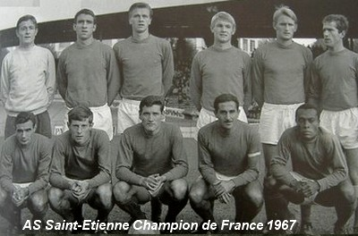

Moments de Gloire
Les dix titres de champions de France
L'AS Saint-Étienne est le club le plus titré en championnat de France, avec dix titres remportés entre 1957 et 1981. Chaque titre représente un moment unique dans l’histoire du club.
1957 : Le premier sacre
En 1957, l'ASSE remporte son tout premier championnat. Ce titre historique marque le début de la domination des "Verts" sous la direction de Jean Snella, un entraîneur légendaire.
Le premier titre de l'ASSE en 1957, une victoire historique (Source : archives ASSE).
1964-1970 : La montée en puissance
Entre 1964 et 1970, l'ASSE remporte quatre titres (1964, 1967, 1968, et 1969). Cette période, menée par des joueurs comme Hervé Revelli et Robert Herbin, consolide leur domination sur le football français.

L’équipe triomphante de 1967, un moment phare de l’histoire des Verts (Source : archives locales).
1974-1976 : L’âge d’or
L'ASSE réalise un triplé historique (1974, 1975, 1976) sous la direction de Robert Herbin. Cette période est marquée par des performances exceptionnelles et un soutien fervent des supporters.
Les joueurs célébrant leur triomphe en 1976 (Source : archives ASSE).
1981 : Le dernier titre
En 1981, l'ASSE remporte son dixième et dernier titre de champion de France. Emmenés par Michel Platini, les "Verts" confirment leur statut de club légendaire malgré les défis financiers à venir.
 Michel Platini et l'ASSE célébrant leur dernier titre en 1981 (Source : archives nationales).
Michel Platini et l'ASSE célébrant leur dernier titre en 1981 (Source : archives nationales).
La finale de la Coupe d'Europe des Clubs Champions (1976)
Le 12 mai 1976, l'ASSE dispute la finale de la Coupe d'Europe des Clubs Champions à Glasgow, en Écosse. Ce match face au Bayern Munich
reste l’un des événements les plus marquants de l’histoire du football français.
Le parcours jusqu’à la finale
L’ASSE réalise un parcours exceptionnel pour atteindre la finale, éliminant notamment le Dynamo Kiev en quarts et le PSV Eindhoven en demi-finales.
Ces victoires sont marquées par l’engagement des joueurs et l’énergie incroyable des supporters.
L’ASSE triomphant face au Dynamo Kiev en quarts de finale (Source : archives UEFA).
Les "poteaux carrés" de Glasgow
Lors de la finale au Hampden Park, les "Verts" dominent par leur détermination et se créent plusieurs occasions. Mais le destin bascule sur deux tirs
emblématiques : les fameux "poteaux carrés" qui empêchent l'ASSE de marquer. Ces poteaux, plus larges que ceux utilisés aujourd'hui,
restent gravés dans la mémoire collective.
 Les fameux "poteaux carrés" de Glasgow, symbole de cette finale tragique (Source : archives ASSE).
Les fameux "poteaux carrés" de Glasgow, symbole de cette finale tragique (Source : archives ASSE).
La défaite et l’héritage
Le Bayern Munich l’emporte finalement 1-0 grâce à un coup franc transformé par Franz Roth. Malgré cette défaite, l’ASSE sort de cette rencontre
avec un immense respect, devenant un symbole de courage et de ténacité. À leur retour à Saint-Étienne, les joueurs sont accueillis en héros
par des milliers de supporters.
Les joueurs de l'ASSE accueillis en héros à leur retour à Saint-Étienne (Source : archives locales).
Six victoires en Coupe de France
Au fil de son histoire, l'ASSE a remporté la Coupe de France à six reprises, marquant à chaque fois les esprits par des performances héroïques et des finales mémorables.
1957 : La première coupe
Quelques semaines après avoir remporté leur premier championnat, les "Verts" réalisent un doublé historique en battant Toulouse en finale (3-1).
C’est le début d’une relation particulière entre l’ASSE et cette compétition.
L’ASSE remporte sa première Coupe de France en 1957 (Source : archives ASSE).
1962 : Une finale inoubliable
Face à Nancy, l’ASSE remporte la coupe grâce à un but décisif de Rachid Mekhloufi. Ce match renforce la légende du club et
de l’un de ses plus grands joueurs.
Rachid Mekhloufi, héros de la finale de 1962 (Source : archives locales).
1968 : Une domination totale
En pleine montée en puissance, l'ASSE remporte la Coupe de France face à Bordeaux (2-1). Ce succès, associé au titre de champion la même année,
consacre leur domination sur le football français.
 Les joueurs de l’ASSE célébrant leur victoire en 1968 (Source : archives ASSE).
Les joueurs de l’ASSE célébrant leur victoire en 1968 (Source : archives ASSE).
1970 : La confirmation
Deux ans plus tard, l’ASSE s’impose face à Nantes (5-0) dans une finale à sens unique. Ce match témoigne de leur supériorité et de leur détermination.
Une victoire écrasante face à Nantes en 1970 (Source : archives locales).
1974 : L’année du renouveau
En battant Monaco en finale (2-1), les "Verts" retrouvent leur place au sommet. Cette victoire marque le début de l’âge d’or sous Robert Herbin.
Les "Verts" triomphants en 1974 (Source : archives ASSE).
1977 : Le dernier triomphe
L’ASSE remporte sa dernière Coupe de France face à Reims (2-1). Cette victoire, portée par Dominique Rocheteau, clôt une décennie glorieuse.
Dominique Rocheteau et l’ASSE soulevant leur sixième Coupe de France (Source : archives nationales).
L’âge d’or avec Robert Herbin
Robert Herbin, surnommé "Le Sphinx", est sans doute l'une des figures les plus emblématiques de l'histoire de l'AS Saint-Étienne. En tant que joueur puis entraîneur,
il a été l'architecte de l’âge d’or du club, menant les "Verts" à leurs plus grands succès dans les années 1970.
Le joueur charismatique
Avant de devenir entraîneur, Herbin a marqué l’histoire de l’ASSE en tant que joueur. Arrivé en 1957, il s’impose comme un milieu de terrain redoutable et
remporte cinq championnats et trois Coupes de France.
Robert Herbin, joueur légendaire des "Verts" (Source : archives ASSE).
L’entraîneur visionnaire
En 1972, Robert Herbin devient entraîneur de l'ASSE. Sous sa direction, le club remporte quatre championnats (1974, 1975, 1976, et 1981) et deux Coupes de France (1974, 1977).
Son style de management, combinant discipline et innovation tactique, révolutionne le football français.
Robert Herbin sur le banc de l’ASSE, guidant ses joueurs (Source : archives nationales).
La saga européenne
Herbin conduit également l'ASSE à la finale de la Coupe d'Europe des Clubs Champions en 1976, un exploit qui reste l’un des moments les plus mémorables
de l’histoire du football français. Les fameux "poteaux carrés" de Glasgow symbolisent cette aventure européenne.
Robert Herbin et l'équipe durant la campagne européenne de 1976 (Source : archives UEFA).
Un héritage intemporel
Robert Herbin a incarné les valeurs de l’ASSE : solidarité, humilité et dépassement de soi. Son héritage dépasse les trophées, marquant l'âme du club
et inspirant les générations futures.
Robert Herbin honoré par les supporters pour son impact sur le club (Source : archives locales).
Le retour en Ligue 1 et la renaissance
Après des années difficiles marquées par des descentes en Ligue 2 et des problèmes financiers, l’AS Saint-Étienne a réussi à se reconstruire
et à retrouver l’élite du football français en 2004. Ce retour a marqué le début d’une nouvelle ère pour les "Verts".
Les années sombres
À la fin des années 1980 et durant les années 1990, l'ASSE connaît une période de déclin, avec des performances sportives en berne et
des difficultés financières importantes. Ces épreuves ont mis le club à rude épreuve, mais la passion des supporters est restée intacte.
Les supporters ont continué à soutenir leur équipe même durant les périodes difficiles (Source : archives locales).
Le retour en Ligue 1
En 2004, l’ASSE remonte en Ligue 1 sous la direction de l’entraîneur Frédéric Antonetti. Ce retour est marqué par un jeu offensif
et une ambiance retrouvée au stade Geoffroy-Guichard. L'équipe, portée par des joueurs comme Pascal Feindouno, fait vibrer les supporters.
Les joueurs de l'ASSE célèbrent leur retour en Ligue 1 en 2004 (Source : archives ASSE).
La renaissance
Au fil des années 2000 et 2010, l’ASSE retrouve un statut de club compétitif. Avec des performances régulières en Ligue 1,
des campagnes européennes et une victoire en Coupe de la Ligue en 2013, le club renaît et redonne espoir à ses supporters.
Victoire en Coupe de la Ligue 2013, symbole de la renaissance du club (Source : archives nationales).
Un avenir prometteur
Grâce à une gestion plus stable et à la ferveur de ses supporters, l’ASSE continue de bâtir un avenir prometteur.
Le stade Geoffroy-Guichard reste le cœur de cette résilience, témoignant de la passion qui unit le club et ses fans.
Le Chaudron, lieu emblématique de la résilience de l’ASSE (Source : archives ASSE).